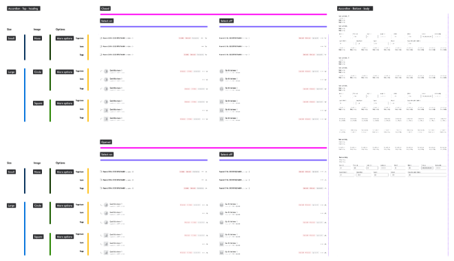
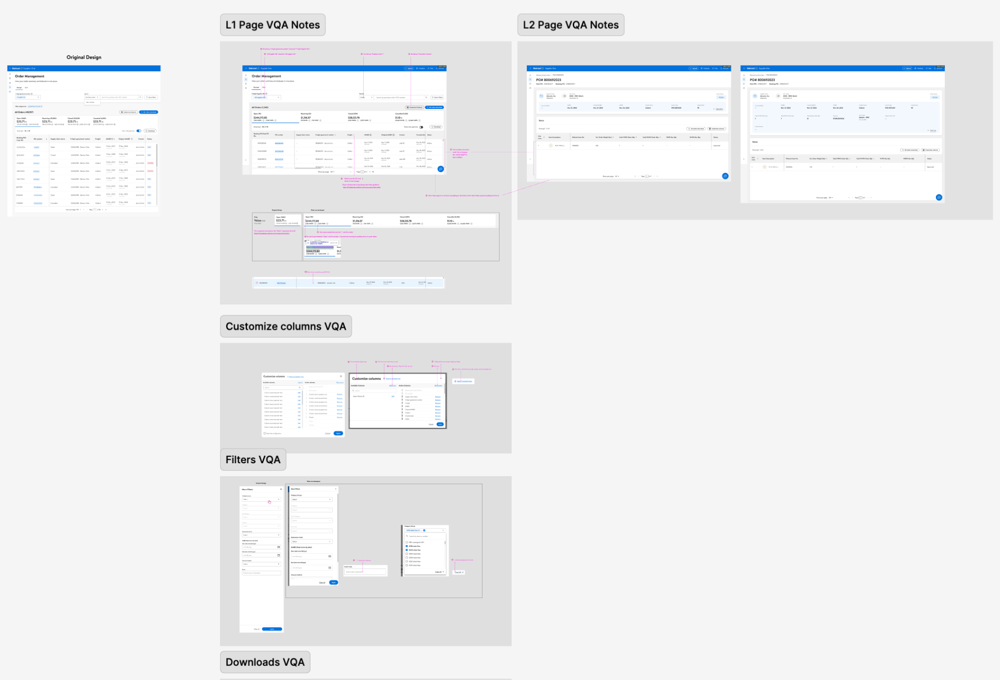

Walmart Supplier One
Walmart's suppliers ran their business across Retail Link, a link farm of more than 100 apps. I led product strategy and design execution to bring the first eight into Supplier One, a single platform built on Walmart's Living Design system. Along the way, I built the design subsystem the squads shared.
The brief said consolidate tools. Research showed the deeper problem: the tools were organized around Walmart's systems, not the supplier's work.
A shared subsystem on Living Design, not one-off screens, so every squad built the same table the same way.
We piloted with key suppliers first and tracked onboarding time, conversion and support load.
Suppliers ran their business across 100+ apps.
Suppliers worked with Walmart through Retail Link, a page of links to more than 100 separate apps. To onboard, manage orders, check payments and see performance, a supplier jumped between tools several times a day.

Supplier friction wasn't back office. It was the business.
98.5% of Walmart U.S. revenue comes through first-party suppliers. Their efficiency feeds Walmart's productivity loop: lower costs for suppliers become lower prices for customers. When suppliers slow down, the whole loop slows down.
Walmart's productivity loop. Supplier One was meant to get the first step moving again.
I went straight to the source: suppliers.
I ran supplier interviews and a stakeholder audit, reviewed how Amazon, eBay, Target and Best Buy serve their suppliers, and used card sorting and journey maps to find where the work broke down.
Supplier interviews, discovery phase
I organized it by the supplier's task, not by Walmart's tools.
The old tools were named after Walmart's internal systems: VIP, APEX, Nova. Suppliers don't think that way. In the card sort, they grouped their work by task, so the new navigation follows the job.
Each supplier sees their own top tasks first.
Research showed two supplier types, and some operate as both. One generic home page would bury what each one needs. So the home page leads with that supplier's own top tasks: past-due orders, data errors to fix, quotes ready to set up.

I built inside Living Design, then extended it.
Living Design is Walmart's design system, and it set our standard. But supplier work runs on dense tables and complex states it didn't cover yet. One component could need 200 to 400 permutations.

The subsystem wasn't my call to make. I built it anyway, refined each component with designers and developers, documented it, and taught the squads to use it. Components went into a shared library, so other Walmart teams could use them too.
What suppliers asked for, and what we built.
Eight core supplier jobs, before and after. Pick one to see what changed and what suppliers said.
{{ redesignActive.label }}
{{ redesignActive.desc }}
I set up design QA with engineering, then we piloted with suppliers.
Feedback between design and engineering was slow. I created a visual QA framework in Figma, where developers compared each build to the design, page by page, and flagged fixes before release. We trained designers and developers to use it.

We rolled out in three waves, so key suppliers could use it first and we could adjust and measure before scaling. A product site helped suppliers move over from the old tools.
Onboarding went from 47 days to 5.
Own the metric, not the mockup.
The first release brought in eight apps. Many more still lived in Retail Link, and the new home page still linked back to it. This was the start of a migration, not the end of one.
Parts of the first release lived in an interim shell, so some screens didn't match the new system yet. Suppliers don't see "interim." They see one product that feels uneven. Next time I'd agree on a consistency bar for interim screens with engineering at kickoff, and check it in the same visual QA review as everything else.
Another Walmart team chose our table pattern without being asked. That's the real test of a system contribution: someone else decides to use it.
Finish the migration on the terms we started it. Rank every app still in Retail Link by how often suppliers need it, and move them in that order. Then hold the platform to one number: the share of supplier tasks finished without leaving Supplier One.
Supplier One brought Walmart's supplier tools into one place, organized around the work suppliers actually do.